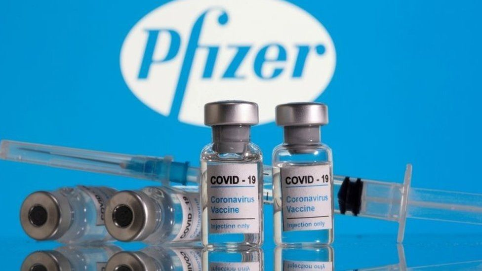

Pfizer
You will need 2 doses of the Pfizer/BioNTech COVID-19 vaccine.It takes 7 days after the 2nd dose for the Pfizer/BioNTech COVID-19 vaccine to work. This is when you are fully vaccinated.You should get your 2nd dose 4 weeks (28 days) after your 1st dose.After having both doses of a COVID-19 vaccine, most people will be protected against the virus.There is a small chance you might still get COVID-19 after vaccination. Even if you do get COVID-19, being vaccinated can reduce how serious your symptoms will be.There is some new evidence to show that the vaccines may reduce you spreading COVID-19 to other people but more research is needed.The World Health Organization recommends that you get your COVID-19 vaccine when it is offered to you.Even after you are vaccinated, continue to follow public health advice on how to stop the spreadprevention of COVID-19. For example, social distancing, wearing a face covering and washing your hands properly and often.All vaccines are tested for safety and effectiveness before they can be used.Pfizer/BionTech is an mRNA vaccine. mRNA vaccines teach your body how to make a protein that will trigger an immune response, without using the live virus that causes COVID-19.Like all medicines, vaccines can cause side effects. Most of these are mild to moderate and short-term. Not everyone gets side effects.Click for more informations
Moderna

You will need 2 doses of the Moderna COVID-19 vaccine.You should get your 2nd dose 4 weeks (28 days) after your 1st dose.It takes 14 days after getting the 2nd dose for it to work. This is when you are fully vaccinated.The Moderna COVID-19 vaccine was developed in line with international standards of safety.It has been tested with thousands of people as part of clinical trials.You should get your 2nd dose 4 weeks (28 days) after your 1st dose.It takes 14 days after getting the 2nd dose for it to work. This is when you are fully vaccinated.There is a small chance you might still get COVID-19 after vaccination. Even if you do get COVID-19, being vaccinated can reduce how serious your symptoms will be.There is some new evidence to show that the vaccines may reduce you spreading COVID-19 to other people but more research is needed.The World Health Organization recommends that you get your COVID-19 vaccine when it is offered to you.Even after you are vaccinated, continue to follow public health advice on how to stop the spread of COVID-19. For example, social distancing, wearing a face covering and washing your hands properly and often.Trials have shown that the Moderna vaccine is 94.5% efficacious. This means that 94.5% of people who got this vaccine in the trial were protected from COVID-19. This vaccine has been tested on people aged 18 and older.Click for more informations
Astrazeneca

You will need 2 doses of the AstraZeneca COVID-19 vaccine.You should get your 2nd dose 4 to 12 weeks after your first dose.Vaccines teach your immune system how to protect you from diseases.It takes 3 weeks, after getting the 1st dose, for the AstraZeneca COVID-19 vaccine to work.You will have the best protection from COVID-19 after the second dose.28 days after your first dose of the AstraZeneca vaccine, you can follow the same 'vaccine bonus' advice as fully vaccinated people. This does not include foreign travel and does not apply if you are told you are close contact of a confirmed case of COVID-19.You still need to get your second dose to make sure that your vaccine protection lasts.Vaccines teach your immune system (your body's natural defences) how to protect you from diseases.It is much safer for your immune system to learn how to protect you from COVID-19 through vaccination than by catching the virus.We do not know yet how long immunity will last. Clinical trials are ongoing to find this out.You will need 2 doses of the AstraZeneca COVID-19 vaccine.After having both doses, most people will have immunity. This means you will be protected against COVID-19.It takes 15 days after getting the second dose to have the best protection.28 days after your 1st dose of the AstraZeneca vaccine, you can do some things that were not recommended before you were vaccinated.You still need to get your second dose to make sure that your vaccine protection lasts.There is a small chance you might still get COVID-19 after vaccination. Even if you do get COVID-19, being vaccinated can reduce how serious your symptoms will be.There is some new evidence to show that the vaccines may reduce you spreading COVID-19 to other people but more research is needed.The World Health Organization recommends that you get your COVID-19 vaccine when it is offered to you.Click for more informations
Johnson and Johnson
You will need 1 dose of the Janssen COVID-19 vaccine to get long-lasting protection.It takes 14 days for the vaccine to work. This is when you are fully vaccinated.Vaccines teach your immune system how to protect you from diseases.It is much safer for your immune system to learn how to protect you from COVID-19 through vaccination than by catching the virus.Most people will be vaccinated at a GP surgery or a vaccination centre.Vaccines teach your immune system (your body's natural defences) how to protect you from diseases.It is much safer for your immune system to learn how to protect you from COVID-19 through vaccination than by catching the virus.We do not know yet how long immunity will last. Clinical trials are happening now to find this out.here is some new evidence to show that the vaccines may reduce you spreading COVID-19 to other people but more research is needed.The World Health Organization recommends that you get your COVID-19 vaccine when it is offered to you.Even after you are vaccinated, continue to follow public health advice on how to stop the spread of COVID-19. For example, social distancing, wearing a face covering and washing your hands properly and often..Click for more informations